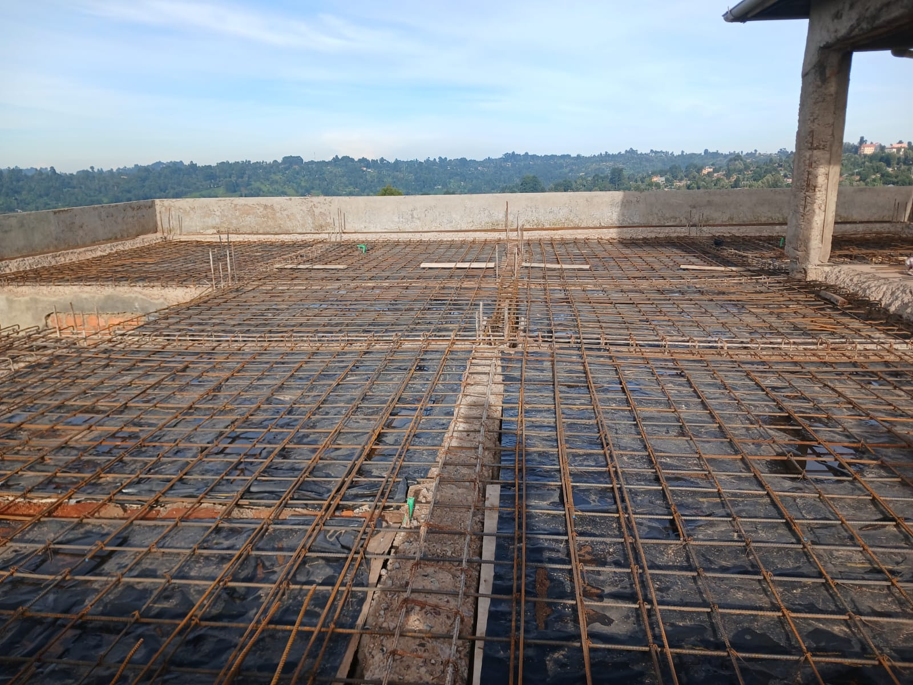
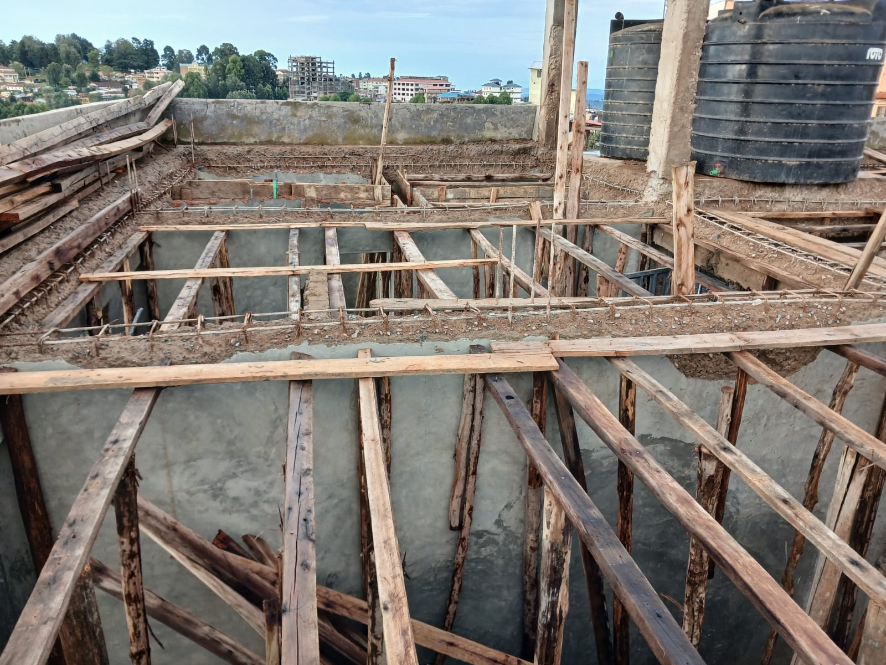
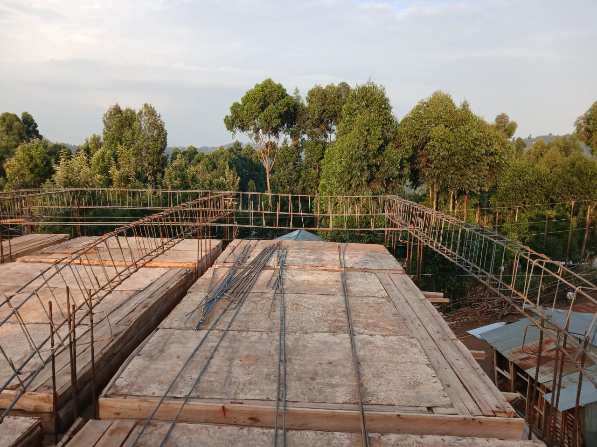
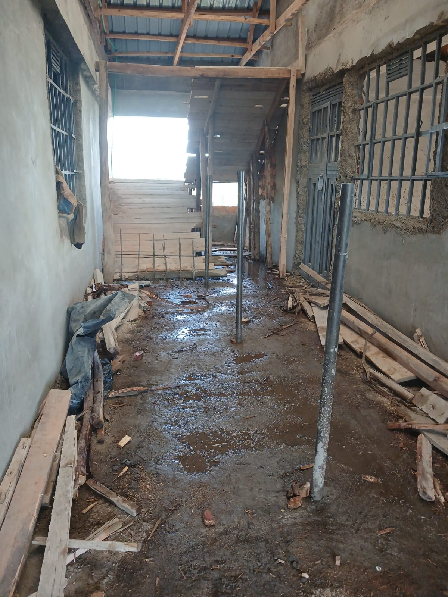
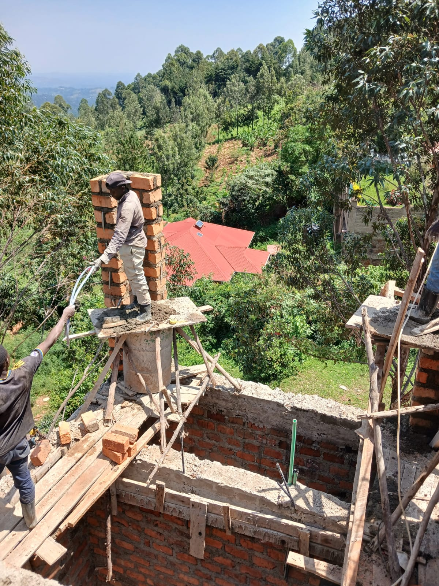
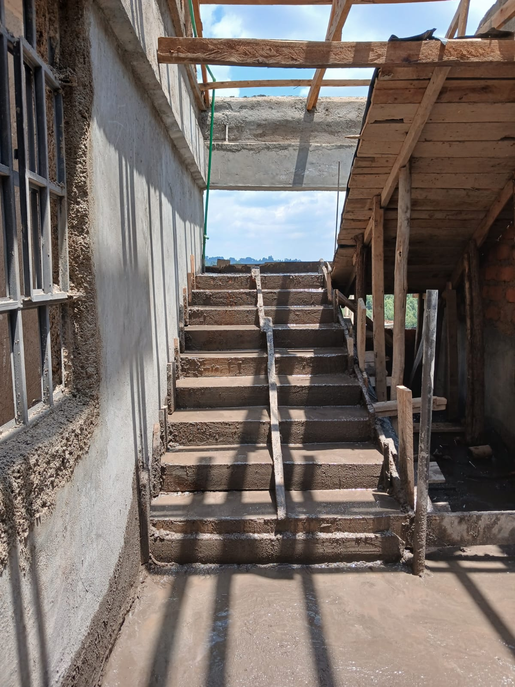
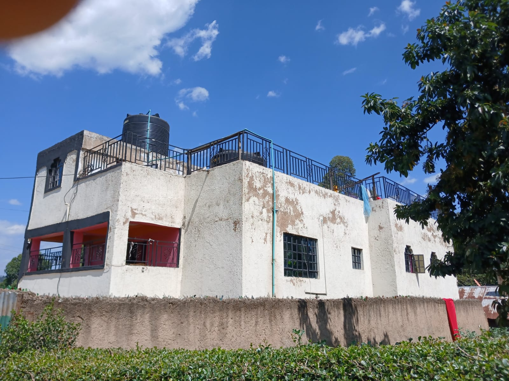
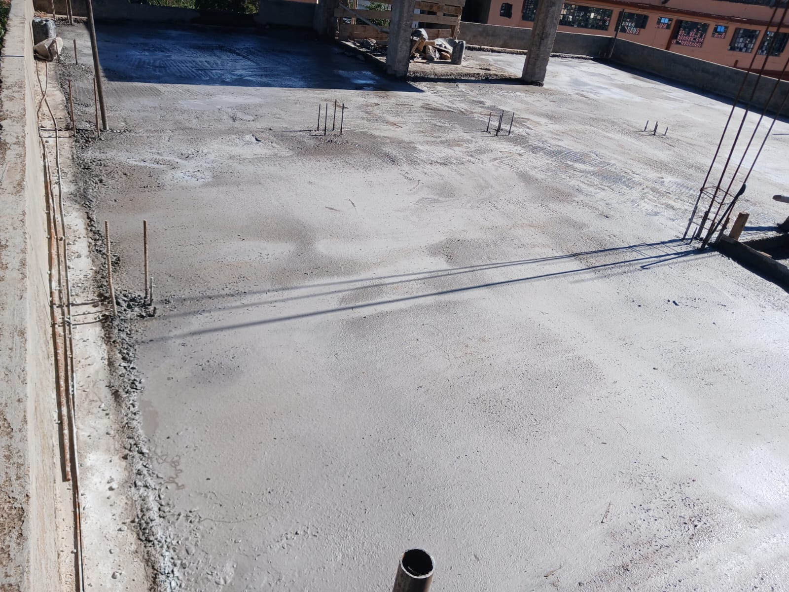
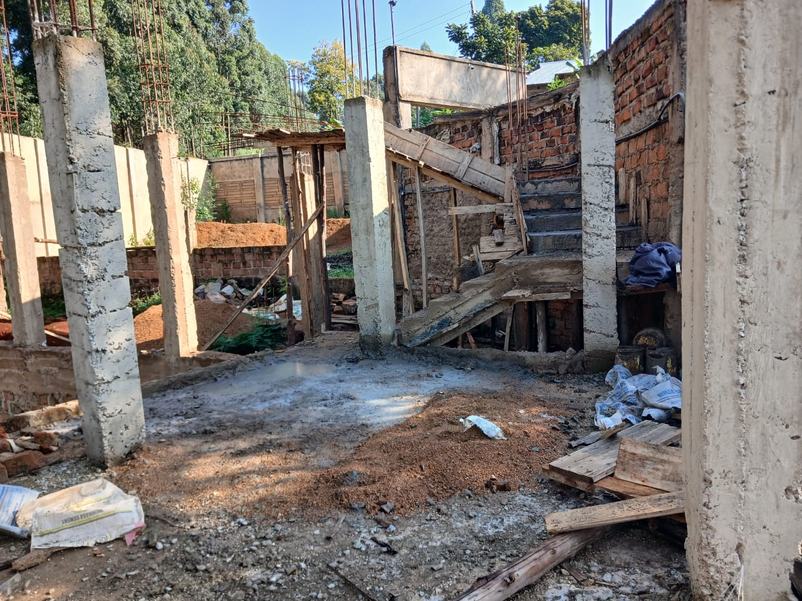

Structural Engineering
Structural assessment, reinforcement, concrete works and practical engineering solutions.
↗
STRUCTURAL • CONSTRUCTION • DELIVERY
Practical engineering solutions. Disciplined execution. Structures designed and built for lasting performance.
HOW WE WORK
Great construction begins long before concrete is poured. It begins with understanding the structure, identifying the right solution and executing every detail correctly.
Helisa Engineering brings engineering thinking to the construction site — combining technical discipline with practical delivery from structural works through completion.
WHAT WE DO
From structural work to complete project delivery, our focus is simple: do the work properly and build for the long term.
Structural assessment, reinforcement, concrete works and practical engineering solutions.
↗Residential and commercial construction from structural works through project completion.
↗Structural alterations, extensions, upgrades and rehabilitation of existing buildings.
↗Slabs, beams, columns, staircases, reinforcement and associated structural works.
↗Technical oversight focused on workmanship, structural integrity and proper execution.
↗SELECTED WORK
Real work. Real sites. A closer look at the engineering, reinforcement and construction process behind our projects.




THE PROCESS
Understand the structure, site conditions and project requirements.
Develop practical structural solutions appropriate for the project.
Translate the engineering into disciplined, quality construction.
Complete the work with attention to integrity, performance and longevity.




LET'S BUILD SOMETHING SOLID
Tell us what you're planning. We'll help you understand the engineering and construction path forward.
Start a Conversation ↗Contact details are temporary and can be updated when confirmed.